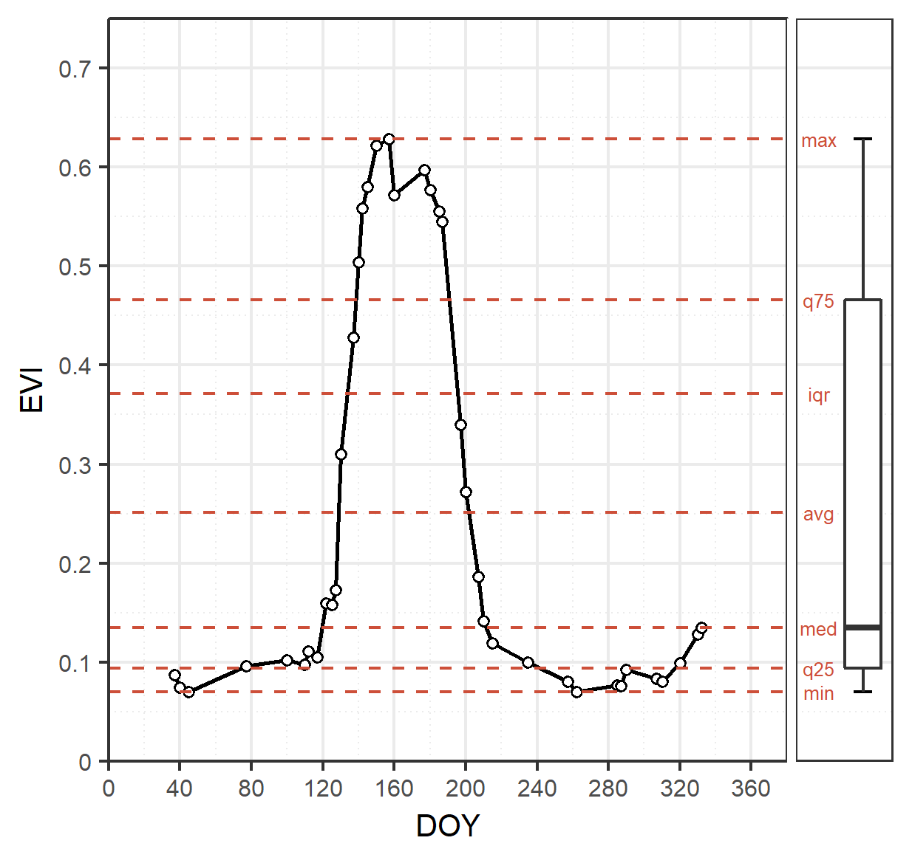

From FORCE observations to peak EVI, its timing and temporal variability
Author
Remote Sensing and Geoinformatics | Freie Universität Berlin
Introduction
Guiding question: Can two locations have the same maximum EVI but behave differently over time?
Last week, our BAP selected one suitable observation near 1 June (±45 days) and retained its complete spectrum. This week, we return to the original BOA/QAI pairs and summarise the suitable observations over a defined period. We begin with maximum EVI, the date of that maximum, median EVI and the observed range. These are examples of spectral-temporal metrics (STMs).
BAP from last week
STMs today
Select one suitable observation per pixel
Summarise multiple suitable observations per pixel
Target date and allowed time window
Explicit start and end dates
All bands share one source observation
Each metric describes a different property of the time series
Source date explains the selected spectrum
Observation count and dates help interpret the summaries
Learning objectives
Spectral-temporal metrics summarize the valid observations of each pixel over a selected period. The figure illustrates how an EVI time series can be described by its maximum, minimum, mean, median and quartiles. These statistics describe the distribution of EVI values but do not retain their temporal order.

Figure 1: Temporal statistics derived from an example EVI time series. DOY = day of year; q25 and q75 = 25th and 75th percentiles; IQR = q75 − q25. Source: HU Berlin, Earth Observation Lab – S04 STMs.
In our script, we calculate similar metrics, using the 10th and 90th percentiles and their difference instead of the quartiles and IQR shown here.
create a quality-screened EVI time series from the same FORCE data;
calculate and distinguish magnitude, variability and timing metrics;
explain why observation count and temporal coverage matter;
interpret example pixels and make one simple QGIS map.
NotePreparation
Use terra, QGIS and one spatial tile and the input data from last week in data/force. Keep .dat and .hdr files together. I have added some other files from September to December in the fu-box (this time tif-files): Link FU-Box. This script is self-contained; no objects from last week’s R session are required.
Use all available dates of 2020, rather than the BAP output. If your collection only contains few observations, it demonstrates statistics for this subset, not an annual trajectory. Missing dates cannot be recovered by calculating more metrics.
1. What does a maximum tell us?
Give a short explanations.
Question A: Two fields have the same peak EVI. What might still differ between them? Sketch two possible time series.
Question B: Which information is lost when a whole time series becomes one median value? Suggest one additional metric.
Question C: One pixel has two clear observations and another has twenty. How would that affect your interpretation of their maxima and ranges?
Discuss: Which metric would help distinguish your sketches? What information would you need before interpreting the maximum date as a vegetation peak?
Read the help: For app(), layers are the observations being summarised. For global(), cells within a layer are summarised. Which direction do we need today?
3. Reuse the BOA/QAI import
As before, the ten supplied FORCE bands are BLUE, GREEN, RED, RE1, RE2, RE3, BNIR, NIR, SWIR1, SWIR2. BNIR is Sentinel-2 B08, whereas NIR is B8A. Today we consistently use B08 (BNIR) for both vegetation indices. Inspect the original band descriptions before assigning names.
The supplied BOA files use NoData −9999 and a reflectance divisor of 10,000. Apply this once. QAI remains an integer. These are already processed FORCE outputs; do not apply an additional Sentinel-2 SAFE offset. The initial AOI is the same central 6 × 6 km area used last week.
Show code
# Run this once if terra is not installed yet:# install.packages("terra")# Load terra for reading, processing and plotting raster data.library(terra)# Set your working directory.# Relative paths below, such as "data/force", start from this folder.# Replace this example path with your own.setwd("Y:/your/working/directory")# ── 1. Define input and output folders ──────────────────────────────────────# Folder containing the FORCE BOA images and their matching QAI files.# BOA = bottom-of-atmosphere reflectance.# QAI = quality information, such as cloud and shadow flags.data_dir<-"data/force"# Folder for the outputs of this STM variant.# Using separate folders makes it easier to compare different variants.out_dir<-"data/output/stm_variant_1"# Create the output folder if it does not already exist.# recursive = TRUE also creates missing parent folders.# showWarnings = FALSE suppresses the warning if the folder already exists.dir.create(out_dir, recursive =TRUE, showWarnings =FALSE)# ── 2. Find the BOA files ──────────────────────────────────────────────────# Search the input folder for filenames matching the expected FORCE format,# for example: 20160502_LEVEL2_SEN2A_BOA.dat## The pattern is a regular expression:# ^ beginning of the filename# [0-9]{8} exactly eight digits: the date as YYYYMMDD# _LEVEL2_SEN2[ABC] Sentinel-2A, Sentinel-2B or Sentinel-2C# _BOA the BOA reflectance product# \\. a literal dot; R requires the backslash to be doubled# (dat|tif|tiff) one of the permitted file extensions# $ end of the filename## full.names = TRUE includes data_dir in the returned file paths.# ignore.case = TRUE accepts uppercase and lowercase filename characters.# Subfolders are not searched because recursive = TRUE is not specified.boa_files<-list.files(data_dir, pattern ="^[0-9]{8}_LEVEL2_SEN2[ABC]_BOA\\.(dat|tif|tiff)$", full.names =TRUE, ignore.case =TRUE)# Stop if fewer than two BOA observations were found.# The exercise requires multiple observations to calculate temporal metrics.# A matching QAI file for each observation is checked below.## length() counts the files in the vector.# 2L is the integer value 2.# stop() ends execution and displays the supplied message.if(length(boa_files)<2L)stop("Provide at least two BOA/QAI pairs.")# ── 3. Check for duplicate observations and missing QAI files ───────────────# Create an observation key from each BOA filename:# 20160502_LEVEL2_SEN2A_BOA.dat → 20160502_LEVEL2_SEN2A## basename() removes the folder path.# sub() removes the final "_BOA" part and the file extension.# In the pattern, [^.]+ means one or more characters other than a dot.## These keys let us identify the same observation saved in multiple formats,# for example as both .dat and .tif.keys<-sub("_BOA\\.[^.]+$", "", basename(boa_files), ignore.case =TRUE)# anyDuplicated() returns 0 if all keys are unique.# A positive result identifies a duplicate, causing this check to stop.# Duplicate observations would otherwise receive extra weight in the STM.if(anyDuplicated(keys))stop("Duplicate observations: check formats/tiles.")# Derive the expected QAI path for each BOA image by replacing "_BOA."# with "_QAI.".## Example:# data/force/20160502_LEVEL2_SEN2A_BOA.dat# data/force/20160502_LEVEL2_SEN2A_QAI.dat## This assumes that each QAI file is in the same folder and uses the# same extension as its BOA file.qai_files<-sub("_BOA\\.", "_QAI.", boa_files, ignore.case =TRUE)# file.exists() returns TRUE or FALSE for each expected QAI path.# ! reverses these results, so TRUE now means that a file is missing.# any() returns TRUE if at least one expected QAI file is missing.if(any(!file.exists(qai_files)))stop("A matching QAI file is missing.")# ── 4. Check ENVI header files ─────────────────────────────────────────────# Combine the BOA and QAI paths into one vector.envi<-c(boa_files, qai_files)# Retain only paths ending in ".dat".# grepl() tests each path against the pattern and returns TRUE or FALSE.# Subsetting with these logical values keeps the matching paths.## The .dat files in this workflow use the ENVI format and need headers.# GeoTIFF files contain their metadata internally and do not need .hdr files.envi<-envi[grepl("\\.dat$", envi, ignore.case =TRUE)]# Construct the expected header paths by replacing ".dat" with ".hdr".# Headers describe how to read the binary data, including its dimensions,# number of bands, data type and spatial reference.## Stop if any expected header is missing.# This check assumes headers named "filename.hdr".if(any(!file.exists(sub("\\.dat$", ".hdr", envi, ignore.case =TRUE)))){stop("A .dat file is missing its .hdr.")}# ── 5. Build and sort an observation table ─────────────────────────────────# Create a table with one row per BOA/QAI pair.## substr(..., 1, 8) extracts the first eight filename characters.# as.Date(..., "%Y%m%d") interprets these as year, month and day.## The boa and qai columns retain the matching file paths.inputs<-data.frame( date =as.Date(substr(basename(boa_files), 1, 8), "%Y%m%d"), boa =boa_files, qai =qai_files)# Dates that cannot be interpreted become NA.# Stop if at least one observation has an invalid date.if(anyNA(inputs$date))stop("Invalid date in a filename.")# Sort the observations chronologically.# If dates are identical, use the BOA path as a secondary sorting criterion.## order() returns the required row positions.# The empty position after the comma means "keep all columns".inputs<-inputs[order(inputs$date, inputs$boa), ]# Reset the row labels after sorting so that they run consecutively again.row.names(inputs)<-NULL# Assign a consecutive source ID to each observation in the sorted table.# seq_len(nrow(inputs)) produces 1, 2, ..., number of observations.## These IDs can later link raster outputs back to their source observations.inputs$source_id<-seq_len(nrow(inputs))# Display the source IDs and acquisition dates for inspection.# This selects columns for display; it does not remove the other columns.inputs[, c("source_id", "date")]# ── 6. Read and inspect the first BOA image ─────────────────────────────────# Define short names for the ten spectral bands in their expected order.# RE = red edge; BNIR = broad near infrared; NIR = near infrared;# SWIR = shortwave infrared.## IMPORTANT: assigning names does not reorder the raster layers.# Check that this order matches the actual order in your FORCE BOA files.band_names<-c("BLUE", "GREEN", "RED", "RE1", "RE2", "RE3","BNIR", "NIR", "SWIR1", "SWIR2")# Open the first BOA image in the chronologically sorted observation table.# rast() creates a SpatRaster object and reads its metadata.# Pixel values are generally read from disk when an operation needs them.## This first image provides the spatial reference for the example area.template<-rast(inputs$boa[1])# Print raster information, including dimensions, resolution, extent,# coordinate reference system and number of layers.print(template)# Display the original layer names before replacing them.# Use these and, if necessary, the header metadata to check the band order.names(template)# Display the coordinate reference system as a PROJ string.# Inspect its units: the example below assumes coordinates in metres.crs(template, proj =TRUE)# Check that the image contains the expected ten bands.# nlyr() returns the number of raster layers.# This checks the band count, but does not verify the band order.if(nlyr(template)!=10L)stop("Expected ten Sentinel-2 bands.")# Assign the band names defined above.names(template)<-band_names# ── 7. Select a small example area ─────────────────────────────────────────# Calculate the centre coordinates of the first image's bounding box.# xmin()/xmax() return its western/eastern coordinate limits.# ymin()/ymax() return its southern/northern coordinate limits.cx<-(xmin(template)+xmax(template))/2cy<-(ymin(template)+ymax(template))/2# Define an area of interest (AOI) extending 3,000 m from the centre# in every direction: a nominal 6 × 6 km example area.## ext() expects the limits in this order:# xmin, xmax, ymin, ymax## Working with a subset reduces processing time and memory requirements.aoi<-ext(cx-3000, cx+3000, cy-3000, cy+3000)# Crop all ten bands of the first image to the AOI.# terra aligns the crop to the existing raster grid.# The resulting extent therefore follows pixel boundaries.example<-crop(template, aoi)# ── 8. Replace NoData values and scale reflectance ──────────────────────────# Replace the FORCE NoData value (-9999) with R's missing-value marker, NA.## ifel(condition, value_if_true, value_if_false) works cell by cell:# if a cell equals -9999 → return NA;# otherwise → retain its original value.## Then divide the valid values by 10,000 to convert the scaled FORCE BOA# integers into reflectance values; for example, 2500 becomes 0.25.## This prepares the values for calculations such as vegetation indices.# No QAI-based cloud or shadow masking has been applied at this stage.example<-ifel(example==-9999, NA, example)/10000# ── 9. Display a true-colour preview ───────────────────────────────────────# Display RED, GREEN and BLUE as the red, green and blue screen channels.# With the band order defined above:# layer 3 = RED, layer 2 = GREEN, layer 1 = BLUE.## stretch = "lin" applies a linear contrast stretch for visualization.# The stretch affects the display; it does not modify the reflectance data.## This preview is useful for checking the selected area and band assignment.# Clouds or shadows may still be visible because QAI masking comes later.plotRGB(example, r =3, g =2, b =1, stretch ="lin")
Select the analysis period
Unlike BAP, these summaries have no target-date score. Every suitable acquisition in the chosen period contributes equally. We are using the observations of a single calendar year. A narrower window answers a different question as well as a broader one.
Show code
# ── 1. Define the analysis period and processing settings ───────────────────# Set the first and last acquisition dates to include in the analysis.# as.Date() converts the text strings into R Date objects.# Both boundary dates are included when filtering below.start_date<-as.Date("2020-01-01")end_date<-as.Date("2020-12-31")# Choose the quality-mask settings used later in the workflow.# FALSE uses the standard criteria; TRUE applies the additional strict# criteria defined in the quality_mask() function.# This line stores the setting; it does not apply a mask yet.strict_qai<-FALSE# Minimum number of valid observations required per pixel when calculating# the temporal metrics later in the workflow.# Here, we also require at least this many acquisitions in the input table.## 2L means the integer value 2.# Two observations are sufficient for a demonstration, but do not guarantee# that the series represents seasonal variation or provides robust metrics.min_obs<-2L# Check that the analysis period and minimum observation count are valid.# stopifnot() stops execution if either condition is not TRUE:# - the start date must be on or before the end date;# - the minimum observation count must be at least two.stopifnot(start_date<=end_date, min_obs>=2L)# ── 2. Keep acquisitions within the selected period ────────────────────────# Retain only rows whose acquisition dates fall within the analysis period.# >= and <= include the start and end dates.# & means that BOTH conditions must be TRUE.# The empty position after the comma keeps all columns.## This replaces inputs with the filtered table. To subsequently expand# the period, first rebuild the original input table.inputs<-inputs[inputs$date>=start_date&inputs$date<=end_date, ]# Reset row labels after filtering so that they run consecutively again.row.names(inputs)<-NULL# Count the remaining acquisitions and stop if there are too few.# nrow() returns the number of rows, with one row per BOA/QAI pair.## This is a check of the available acquisitions, not of valid observations# at individual pixels. Clouds, shadows or missing data may leave a pixel# with fewer than min_obs usable observations.if(nrow(inputs)<min_obs){stop("Too few acquisitions: inspect the period and the available BOA/QAI pairs.")}# ── 3. Check that each date occurs only once ────────────────────────────────# Identify dates that appear in more than one row.# anyDuplicated() returns 0 if all dates are unique and a positive integer# if a duplicate exists. In an if() condition, a positive value acts as TRUE.## For this exercise, we require one acquisition per date so that dates with# multiple acquisitions do not contribute more observations to the metrics.# This check stops execution; it does not automatically select a file.if(anyDuplicated(inputs$date)){stop("Multiple acquisitions on one date: select one per day for this exercise.")}# ── 4. Update source IDs and inspect temporal sampling ─────────────────────# Assign consecutive source IDs to the remaining acquisitions.# seq_len(nrow(inputs)) produces 1, 2, ..., number of remaining rows.# The chronological order established earlier is retained.## These IDs now refer to the filtered input table and may differ from# the IDs assigned before filtering.inputs$source_id<-seq_len(nrow(inputs))# Display the source ID and acquisition date of each selected observation.print(inputs[, c("source_id", "date")])# Count the acquisitions available in each represented calendar month.# format(..., "%m") extracts the month as "01", "02", ..., "12".# table() counts how often each month occurs.## Months without acquisitions are omitted rather than displayed as zero.# These counts describe input acquisitions, not cloud-free observations# at individual pixels.print(table(format(inputs$date, "%m")))# Warn if fewer than five acquisitions remain.# warning() displays a message but allows the script to continue.## Five is an illustrative warning threshold, not a quality guarantee:# even a larger number of acquisitions may be clustered in a short period# or contain too few valid observations after quality masking.if(nrow(inputs)<5L)warning("Very sparse series: interpret only as a demonstration.")
Checkpoint: How many dates are available, and which months are missing?
ImportantChoosing the time window
For a direct comparison with last week’s BAP, use start_date <- as.Date("2020-06-01") - 45 and end_date <- as.Date("2020-06-01") + 45. This is 17 April–16 July 2020. In a collection containing for isntance only 2 April and 2 May, not all statistics may make sense; the script stops at min_obs = 2.
4. Reuse the quality screen and calculate EVI per date
The mask is the same as last week: exclude missing data, every flagged cloud state (including the existing buffer), shadows, snow, high/fallback aerosol, subzero/saturation, low sun and poor/shadowed illumination. Water remains available. strict_qai = TRUE additionally excludes interpolated aerosol and medium illumination. No cloud-distance calculation is needed. Consult the FORCE QAI definitions.
Show code
# A single QAI value stores several quality flags as bits in one integer.# This function extracts the value of one field, such as cloud or aerosol.# q = one QAI value or a vector of QAI values# start = position of the field's first bit, counting from 0 on the right# width = number of bits in the field (1 bit by default)qai_field<-function(q, start, width=1L){# Divide by 2^start and round down to discard the bits to the right.# Then take the remainder modulo 2^width to keep only the selected bits.floor(q/2^start)%%2^width}# Identify pixels that meet our quality criteria.quality_mask<-function(q, strict=FALSE){good<-!is.na(q)&q>=0&# QAI available and non-negativeqai_field(q, 0)==0&# Valid dataqai_field(q, 1, 2)==0&# Clear: no cloud or cloud bufferqai_field(q, 3)==0&qai_field(q, 4)==0&# No cloud shadow or snowqai_field(q, 6, 2)<=1&# Estimated or interpolated aerosolqai_field(q, 8)==0&qai_field(q, 9)==0&# No subzero or saturation flagqai_field(q, 10)==0&# No high sun zenith flagqai_field(q, 11, 2)<=1# Good or medium illumination# Strict mode additionally requires estimated aerosol and good illumination.if(strict){good<-good&qai_field(q, 6, 2)==0&qai_field(q, 11, 2)==0}# Return an acceptance mask; treat any remaining NA as rejected (0).ifel(is.na(good), 0, good)}
We calculate EVI for each acquisition before temporal aggregation:
The blue band helps compensate for atmospheric effects; it does not replace quality screening. The additive constant requires physical reflectance.
Show code
# Create two empty lists with one entry per acquisition:# boa stores the masked reflectance images;# evi_layers stores the corresponding single-layer EVI rasters.boa<-evi_layers<-vector("list", nrow(inputs))# Process each acquisition in the input table.for(iinseq_len(nrow(inputs))){# Display the acquisition date to track processing progress.message("Preparing ", inputs$date[i])# Open the matching reflectance image and quality information raster.b<-rast(inputs$boa[i])q<-rast(inputs$qai[i])# Require ten spectral bands and one QAI layer.# || means OR: stop if either band count is incorrect.if(nlyr(b)!=10L||nlyr(q)!=1L)stop("Unexpected band count.")# Check that the spatial grids match before processing.# Compare the BOA image with the template, then QAI with BOA.# [[1]] selects the first band; all bands share the image's spatial grid.# stopOnError = TRUE stops execution if the geometries differ.compareGeom(template[[1]], b[[1]], stopOnError =TRUE)compareGeom(b[[1]], q, stopOnError =TRUE)# Crop reflectance to the common area of interest, replace NoData with NA,# and convert scaled integer values to reflectance.b<-crop(b, aoi)b<-ifel(b==-9999, NA, b)/10000# Assign the band names so individual bands can be selected by name.names(b)<-band_names# Crop QAI to the same area.# QAI values encode flags and must NOT be divided by 10,000.q<-crop(q, aoi)# Retain the same complete-spectrum requirement as in the BAP script.# !is.na(b) identifies valid values in each band.# app(..., "sum") counts the valid bands at each pixel.# A pixel passes only if all ten bands contain values.complete_spectrum<-app(!is.na(b), "sum")==nlyr(b)# Accept a pixel only if BOTH the QAI criteria and the complete-spectrum# requirement are met. strict_qai controls the optional stricter criteria.good<-quality_mask(q, strict =strict_qai)&complete_spectrum# Set rejected pixels (good == 0) to NA across all spectral bands.b<-mask(b, good, maskvalues =0)# Store the masked reflectance image for this acquisition.# Double brackets select a single list entry.boa[[i]]<-b# Calculate the EVI denominator using broad NIR, red and blue reflectance.# Reflectance must already be scaled because the formula includes +1.denominator<-b[["BNIR"]]+6*b[["RED"]]-7.5*b[["BLUE"]]+1# Replace denominators very close to zero with NA before dividing.# abs() checks their magnitude regardless of sign.# 1e-6 means 0.000001; this avoids division by zero or tiny denominators.denominator<-ifel(abs(denominator)<1e-6, NA, denominator)# Calculate EVI for every accepted pixel.# Pixels masked earlier remain NA.evi<-2.5*(b[["BNIR"]]-b[["RED"]])/denominator# Store the EVI raster, replacing any infinite or undefined results with NA.# Finite values are retained without clipping, including values outside 0–1.evi_layers[[i]]<-ifel(is.finite(evi), evi, NA)}# Combine the individual EVI rasters into one multilayer SpatRaster.# Each layer represents one acquisition in the order of the input table.evi_ts<-rast(evi_layers)# Give each layer a descriptive name, for example "EVI_20200615".names(evi_ts)<-paste0("EVI_", format(inputs$date, "%Y%m%d"))# Attach acquisition dates as time metadata.# These dates can be used to select or group layers by time.time(evi_ts)<-inputs$date# Display the fourth acquisition and its date.# This line requires at least four acquisitions in the filtered input table.plot(evi_ts[[4]], main =paste("EVI", inputs$date[4]))
Checkpoint: Why do we mask before summarising? Why might EVI still contain outliers? Would calculating EVI from the temporal maximum of each individual band give the same result as calculating EVI for every acquisition first and then taking its temporal maximum? Consider whether the band maxima occur on the same date.
Additional: Animate the EVI maps
Watch the quality-screened EVI maps in chronological order. Every frame uses the same colour scale. Grey cells indicate missing or excluded observations; completely empty acquisitions are labelled accordingly.
Show code
# Run once if needed: install.packages("magick")library(magick)# Create a folder for the PNG frames and the final GIF.animation_dir<-file.path(out_dir, "animation")dir.create(animation_dir, recursive =TRUE, showWarnings =FALSE)# Require matching numbers of layers and dates, and at least two observations.stopifnot(nlyr(evi_ts)==nrow(inputs), nlyr(evi_ts)>=2L)# Use a fixed colour scale so colours remain comparable across dates.display_limits<-c(-0.2, 1.0)evi_colours<-colorRampPalette(c("#ffffe5", "#c2e699", "#78c679", "#238443", "#004529"))(100)# Count valid pixels per date to identify completely empty layers.valid_counts<-global(is.finite(evi_ts), "sum", na.rm =TRUE)[, 1]print(data.frame(date =inputs$date, valid_pixels =valid_counts))# Define the exact frame files to include, excluding any old PNGs.frame_files<-file.path(animation_dir,paste0("EVI_", format(inputs$date, "%Y%m%d"), ".png"))# Function to save one acquisition as a PNG.render_evi_frame<-function(i){r<-evi_ts[[i]]frame_title<-paste("EVI |", format(inputs$date[i], "%Y-%m-%d"))png(frame_files[i], width =1000, height =900, res =120, bg ="white")on.exit(dev.off())# Close the graphics device when the function exits.if(valid_counts[i]>0){plot(r, main =frame_title, type ="continuous", col =evi_colours, range =display_limits, fill_range =TRUE, colNA ="grey85", smooth =FALSE, axes =FALSE, maxcell =ncell(r), mar =c(4, 2, 4, 7), plg =list(title ="EVI", at =seq(-0.2, 1.0, by =0.2)))}else{# Use a grey placeholder if no valid pixels remain after masking.par(mar =c(4, 2, 4, 7))plot.new()plot.window( xlim =c(xmin(r), xmax(r)), ylim =c(ymin(r), ymax(r)), asp =1)rect(xmin(r), ymin(r), xmax(r), ymax(r), col ="grey85", border =NA)title(main =frame_title)text((xmin(r)+xmax(r))/2,(ymin(r)+ymax(r))/2,"No valid EVI observations")}# Add the observation number and explain the grey areas.mtext(sprintf("Observation %d of %d | Grey: no valid EVI",i, nlyr(evi_ts)), side =1, line =1, cex =0.85)}# Render all acquisitions in chronological order.for(iinseq_len(nlyr(evi_ts))){render_evi_frame(i)}# Read the PNGs and combine them into a continuously looping GIF.# Frames have equal duration, regardless of the time between acquisitions.frames<-magick::image_read(frame_files)animation<-magick::image_animate(frames, fps =2, # Two acquisitions per second. loop =0, # Repeat indefinitely. dispose ="background")# Save the GIF and display its location.gif_path<-file.path(animation_dir, "EVI_animation.gif")magick::image_write(animation, path =gif_path, format ="gif")message("Animation saved: ", normalizePath(gif_path))
Open EVI_animation.gif from the output folder to watch the animation. The individual PNGs are saved alongside it.
NoteInterpreting the animation
Each acquisition is displayed for the same duration, even when the dates are unevenly spaced. No intermediate observations are interpolated and no cloud gaps are filled.
Values outside the display range receive the “end colours”; the original EVI values remain unchanged.
5. Calculate magnitude and variability metrics
For a pixel with valid values \(x_1,\ldots,x_n\), the observed range is \(\max(x)-\min(x)\). We also calculate the P90–P10 range, which gives less weight to isolated extremes when many observations are available. Neither is automatically the full annual amplitude.
Metric
Interpretation
Important limitation
Maximum
Highest observed EVI in the period
Sensitive to outliers and missed peaks
Median
Middle value among valid observations
Depends on which dates were observed
Minimum
Lowest observed EVI
Residual clouds/shadows can affect it
Range
Maximum minus minimum
Not a fitted seasonal amplitude
Mean
Average of the available values
Not weighted by elapsed time
Standard deviation
Spread around the mean
Sample SD; requires at least two values
P10 / P90
Lower / upper distribution quantiles
Weakly supported in sparse series
P90–P10
Range between these quantiles
With two dates, not a robust seasonal estimate
The function explicitly removes missing/non-finite values and returns NA when fewer than min_obs remain. This avoids Inf/-Inf at empty pixels. R’s default type 7 quantile interpolation is used.
Show code
# Define a function that calculates nine temporal metrics for one pixel.# x contains this pixel's EVI values across all selected acquisition dates.# min_obs specifies the minimum number of valid observations required.stm_values<-function(x, min_obs=2L){# Keep only finite values: remove NA, NaN and positive/negative infinity.# The remaining observations may differ between pixels because of masking.x<-x[is.finite(x)]# If too few valid observations remain, return nine missing values:# one for each metric. Otherwise, continue with the calculations below.## rep() repeats a value; NA_real_ explicitly represents a missing number.# Returning the same number of values for every pixel ensures that the# raster output always has nine metric layers.if(length(x)<min_obs)return(rep(NA_real_, 9L))# Calculate two percentiles of the valid observations:# p[1] = 10th percentile (p10): describes the lower part of the distribution.# p[2] = 90th percentile (p90): describes the upper part.## names = FALSE returns the values without labels such as "10%".# type = 7 is R's default method and interpolates between ordered values.# A percentile therefore does not necessarily equal an observed EVI value.p<-quantile(x, probs =c(0.1, 0.9), names =FALSE, type =7)# Combine the nine metrics into one numeric vector.# Their order must match metric_names below:## maximum: highest observed EVI.# median: central value after sorting; for an even number of observations,# the mean of the two central values.# minimum: lowest observed EVI.# range: maximum minus minimum; the full observed spread.# mean: arithmetic average of the observations.# sd: sample standard deviation; spread around the mean.# p10: 10th percentile.# p90: 90th percentile.# p90_p10: spread between these percentiles, less sensitive to individual# extreme values than the full range.## The final expression is returned automatically by the function.c(max(x), median(x), min(x), max(x)-min(x),mean(x), sd(x), p[1], p[2], p[2]-p[1])}# Define the metric names in exactly the same order as the returned values.metric_names<-c("maximum", "median", "minimum", "range", "mean", "sd","p10", "p90", "p90_p10")# Test the function on a small example before processing the raster.# stm_values() calculates the nine metrics.# setNames() attaches their names.# round(..., 3) rounds this example output to three decimal places.# This rounding does not affect the raster calculations below.round(setNames(stm_values(c(0.2, 0.6, NA, 0.4, 0.3, 0.9, 0.05)), metric_names), 3)# Apply the function separately to the time series of EACH raster cell.# For each pixel, app() passes its values across all EVI layers to stm_values().# It summarizes observations through time, not neighbouring pixels in space.## min_obs = min_obs passes the threshold defined earlier in the script# to the function, overriding its default if a different value was selected.## The result is a SpatRaster with nine layers, one per metric.# Pixels with too few valid observations receive NA in all nine layers.evi_stm<-app(evi_ts, stm_values, min_obs =min_obs)# Label the output layers, for example "EVI_maximum" and "EVI_median".names(evi_stm)<-paste0("EVI_", metric_names)# Select three metric layers by name and display them.# range = c(-1, 1) sets common display limits; it does not change saved values.# Maximum and median describe EVI levels, whereas range describes variability# and is always non-negative where it can be calculated.plot(evi_stm[[c("EVI_maximum", "EVI_median", "EVI_range")]], range =c(-1,1))
6. Save the date of the observed maximum
A maximum value alone cannot tell us when it occurred. We retain the acquisition index, calendar date and day of year. Exact ties use the earliest date because the inputs are sorted. The date is an observed acquisition date, and must not represent the timing of the real peak.
Show code
# Find the position of the highest valid EVI in one pixel's time series.peak_index<-function(x, min_obs=2L){valid<-is.finite(x)# Return NA if too few valid observations remain.if(sum(valid)<min_obs)return(NA_integer_)# Replace invalid values with negative infinity so they cannot be selected.# Keep their positions to preserve the link to the acquisition dates.x[!valid]<--Inf# Return the position of the maximum, not its EVI value.# Ties select the first occurrence: the earliest date in our sorted series.which.max(x)}# Identify the acquisition containing each pixel's observed EVI maximum.# Layer positions correspond to source IDs in the filtered inputs table.peak_id<-app(evi_ts, peak_index, min_obs =min_obs)names(peak_id)<-"EVI_peak_source_id"# Translate raster indices into values from a lookup vector.# For example, index 3 retrieves the third acquisition date; NA remains NA.lookup_raster<-function(index, lookup){app(index, function(x)lookup[as.integer(x)])}# Convert source IDs into numeric dates, for example 20200715.peak_date<-lookup_raster(peak_id,as.numeric(format(inputs$date, "%Y%m%d")))# Convert source IDs into day of year (DOY): January 1 = 1.peak_doy<-lookup_raster(peak_id, as.integer(format(inputs$date, "%j")))names(peak_date)<-"EVI_peak_date_YYYYMMDD"names(peak_doy)<-"EVI_peak_DOY"# Display the timing of the observed maximum.# This is the highest EVI among available valid observations;# the actual seasonal peak may fall between acquisitions or within data gaps.plot(peak_doy, main ="Day of year of the observed EVI maximum")
Checkpoint: Could two pixels with the same peak date have different maximum EVI? Could a cloud gap make the apparent maximum date misleading? If you compare different years, keep the calendar date and account for leap years when interpreting DOY.
7. Count observations and inspect example time series
Counts must refer to the same valid values used in the metrics. Empty pixels remain 0. First and last dates describe temporal coverage.
Show code
# Count finite EVI observations across all dates for each pixel.# TRUE counts as 1 and FALSE as 0.n_obs<-app(is.finite(evi_ts), "sum")names(n_obs)<-"EVI_n_obs"# Find the first and last valid acquisition dates for one pixel.date_bounds<-function(x, date_numbers){ok<-is.finite(x)# Return two missing values if no valid observations exist.if(!any(ok))return(c(NA_real_, NA_real_))# Select dates with valid EVI and return their minimum and maximum.range(date_numbers[ok])}# Apply the function to each pixel, supplying dates as YYYYMMDD numbers.# These numbers preserve date order but should not be subtracted for durations.bounds<-app(evi_ts, date_bounds, date_numbers =as.numeric(format(inputs$date, "%Y%m%d")))names(bounds)<-c("first_valid_date_YYYYMMDD", "last_valid_date_YYYYMMDD")# Combine observation counts, peak information and date bounds into one raster.# These layers help assess the temporal support behind the calculated metrics.info<-c(n_obs, peak_id, peak_date, peak_doy, bounds)plot(n_obs, main ="Number of valid EVI observations")# Calculate the percentage of AOI pixels meeting the observation threshold.# The mean of a TRUE/FALSE raster is the fraction of pixels that are TRUE.coverage<-global(n_obs>=min_obs, "mean", na.rm =TRUE)[1, 1]*100print(data.frame(min_obs =min_obs, coverage_percent =coverage))# Warn if no pixels have enough valid observations to calculate the metrics.if(coverage==0)warning("No supported pixels: inspect the mask and date selection.")
We compare the time series of three contrasting locations. The code uses evenly spaced cells only to make the example reproducible.You might of course choose other locations e.g. by providing a point shape file etc.
Show code
# Select three example cells distributed across the raster's cell-number range.# seq() generates seven positions; [c(2, 4, 6)] selects three of them.# round() and as.integer() produce cell numbers; unique() removes duplicates.# Use the same cell numbers for all variants with the same raster grid.example_cells<-unique(as.integer(round(seq(1, ncell(evi_ts), length.out =7)))[c(2, 4, 6)])# Extract EVI values: rows represent example cells, columns acquisition dates.series<-as.matrix(extract(evi_ts, example_cells))# Retrieve the centre coordinates of the selected cells.xy<-xyFromCell(evi_ts, example_cells)# Build a table with one row per cell and acquisition date.# rep() repeats cell IDs and coordinates for each date.# t() transposes the matrix so as.vector() lists all dates for one cell# before moving to the next cell, matching the other table columns.example_table<-data.frame( cell =rep(example_cells, each =nrow(inputs)), x =rep(xy[, 1], each =nrow(inputs)), y =rep(xy[, 2], each =nrow(inputs)), date =rep(inputs$date, times =length(example_cells)), EVI =as.vector(t(series)))# Export the table for inspection or comparison with other variants.write.csv(example_table, file.path(out_dir, "example_time_series.csv"), row.names =FALSE)# Define a plotting function that can be reused on screen and for PNG export.plot_example_series<-function(){# Arrange one panel per cell; restore previous settings when finished.old_par<-par(mfrow =c(1, length(example_cells)))on.exit(par(old_par))# Use common EVI limits to make the panels comparable.# Provide fallback limits if all values are missing, and expand constant ranges.limits<-range(series, na.rm =TRUE)if(!all(is.finite(limits)))limits<-c(-0.2, 1)if(diff(limits)==0)limits<-limits+c(-0.05, 0.05)for(jinseq_along(example_cells)){values_j<-series[j, ]# Show actual observations as points, leaving missing dates blank.# All panels cover the full analysis period.plot(inputs$date, values_j, type ="p", pch =16, ylim =limits, xlim =c(start_date, end_date), xlab ="Date", ylab ="EVI", main =paste("Cell", example_cells[j]))# Add summaries only if the cell meets the observation threshold.if(sum(is.finite(values_j))>=min_obs){# Dashed blue line: median of the available observations.abline(h =median(values_j, na.rm =TRUE), lty =2, col ="steelblue")# Red circle: observed EVI maximum, selected using our helper function.k<-peak_index(values_j, min_obs)points(inputs$date[k], values_j[k], pch =21, cex =1.5, col ="red")}}}# Display the plots on screen.plot_example_series()# Draw the same plots into a PNG file, then close the graphics device.png(file.path(out_dir, "example_time_series.png"), width =1500, height =600, res =130)plot_example_series()dev.off()
Interpret: Compare the time series. What can you tell about the example pixels without knowing exaclty which land cover they represent?
8. Export and check the results
This final step saves the EVI metrics and supporting information as GeoTIFFs for further analysis in R or QGIS. It also exports the source table, processing settings and software versions to document how the results were produced. Finally, the script reopens the rasters and checks their spatial geometry and layer count.
Show code
# Include the analysis period in the raster filenames, e.g. 20200101_20201231.tag<-paste(format(start_date, "%Y%m%d"), format(end_date, "%Y%m%d"), sep ="_")stm_path<-file.path(out_dir, paste0("STM_EVI_", tag, ".tif"))info_path<-file.path(out_dir, paste0("STM_EVI_", tag, "_info.tif"))# Save the nine EVI metrics as a GeoTIFF with 32-bit floating-point values.# DEFLATE provides lossless compression; overwrite replaces an existing file.writeRaster(evi_stm, stm_path, overwrite =TRUE, datatype ="FLT4S", gdal ="COMPRESS=DEFLATE")# Save the information layers with 64-bit floating-point values.# This preserves YYYYMMDD date integers exactly; 32-bit floats cannot# represent every eight-digit date integer without rounding.writeRaster(info, info_path, overwrite =TRUE, datatype ="FLT8S", gdal ="COMPRESS=DEFLATE")# Export the source IDs, dates and input filenames.# Work on a copy of inputs so its original file paths remain available.# basename() removes folder paths, making the exported table easier to read.source_table<-inputssource_table$boa<-basename(source_table$boa)source_table$qai<-basename(source_table$qai)write.csv(source_table, file.path(out_dir, "sources.csv"), row.names =FALSE)# Record the main processing choices so the results can be reproduced.# Besides the period and mask settings, document the EVI formula,# observation requirements, percentile method and handling of peak ties.settings<-list(start_date =start_date, end_date =end_date, strict_qai =strict_qai, min_obs =min_obs, aoi =as.vector(aoi), bands =band_names, reflectance_divisor =10000, nir_band ="BNIR (B08)", evi ="2.5*(BNIR-RED)/(BNIR+6*RED-7.5*BLUE+1)", denominator_tolerance =1e-6, quantile_type =7, metric_names =names(evi_stm), completeness ="all ten BOA bands required per observation", temporal_weighting ="equal weight per valid acquisition; no interpolation", peak_ties ="earliest acquisition")# Save settings as an R-readable text representation.# They can later be loaded with dget("path/to/settings.txt").dput(settings, file.path(out_dir, "settings.txt"))# Record the R version, platform and package versions for reproducibility.capture.output(sessionInfo(), file =file.path(out_dir, "sessionInfo.txt"))# Reopen the exported rasters to check that they can be read.saved<-rast(stm_path)saved_info<-rast(info_path)# Verify that their spatial grids match the original raster objects.compareGeom(evi_stm, saved, stopOnError =TRUE)compareGeom(info, saved_info, stopOnError =TRUE)# Require nine metric layers and six information layers.# These checks verify geometry and layer counts, not individual pixel values.stopifnot(nlyr(saved)==9L, nlyr(saved_info)==6L)
The metric raster contains nine EVI summaries; the information raster contains count, peak source ID, peak calendar date, peak DOY, first valid date and last valid date. Keep the source and settings records with the rasters. No additional reflectance scaling is needed after export.
9. Inspect in QGIS and make one map
Open QGIS and add both exported GeoTIFFs using Layer → Add Layer → Add Raster Layer (or drag the files into the map).
Open Layer Properties → Symbology → Singleband pseudocolor. Choose EVI_maximum; repeat for median and range. Use the same fixed colour limits when comparing the same metric between variants. A range needs a different scale from a maximum.
Display EVI_peak_DOY from the information raster. For this single-year period, use a sequential ramp and a legend labelled Day of year. Use Identify Features to check EVI_peak_date_YYYYMMDD at the same location.
Inspect EVI_n_obs beside the metrics. A missing metric may mean that too few valid observations remain. A count of zero is not EVI = 0.
Create one simple map of a chosen metric using Project → New Print Layout, then Add Map. A clear title, metric/period, legend, scale bar and short data-source note are sufficient. Export as PDF or PNG.
Discuss: An RGB made from three temporal metrics is a feature visualisation, not a true-colour image acquired on one day. Do not interpret it as one observed spectrum.
10. Homework — compare two meaningful choices
Define and document your AOI, period, available dates, quality rules and min_obs. Create the four main outputs: maximum, maximum date, median and observed range, together with observation count.
Create a second variant by changing the analysis period to June 1st +- 45 days. Use a separate out_dir and keep the AOI and example pixels fixed. State a prediction before running it. If the collection is sparse, an entirely masked second variant is informative; explain the cause instead of lowering the threshold silently.
Compare and explain coverage and the metrics at three locations using their actual EVI time series. Which differences describe vegetation, and which could reflect sampling or residual noise?
Map and discuss: make one simple QGIS map of your chosen metric and compare the variants. Explain what the maximum date does and does not tell you.
Submit via Moodle: clearly structured .R or .rmd, source/parameter records, one simple map, example time-series figure/table and the short comparison. Label your pair and both variants clearly.
Optional extension — other indices and spectral bands
The core workflow ends above. To see why these are spectral-temporal metrics, apply the same summaries to an individual band or a second index. Each resulting layer describes that variable through time; separate band maxima need not originate on the same date.
Show code
setwd("D:/Lehre/master_2026")# Red reflectance through time: one layer per acquisition.red_ts<-rast(lapply(boa, function(b)b[["RED"]]))red_stm<-app(red_ts, stm_values, min_obs =min_obs)names(red_stm)<-paste0("RED_", metric_names)writeRaster(red_stm, file.path(out_dir, paste0("STM_RED_", tag, ".tif")), overwrite =TRUE, datatype ="FLT4S", gdal ="COMPRESS=DEFLATE")# NDVI from each original masked observation, consistently using B08.ndvi_ts<-rast(lapply(boa, function(b){denominator<-b[["BNIR"]]+b[["RED"]]denominator<-ifel(abs(denominator)<1e-6, NA, denominator)ndvi<-(b[["BNIR"]]-b[["RED"]])/denominatorifel(is.finite(ndvi), ndvi, NA)}))ndvi_stm<-app(ndvi_ts, stm_values, min_obs =min_obs)names(ndvi_stm)<-paste0("NDVI_", metric_names)ndvi_count<-app(is.finite(ndvi_ts), "sum")names(ndvi_count)<-"NDVI_n_obs"writeRaster(c(ndvi_stm, ndvi_count),file.path(out_dir, paste0("STM_NDVI_", tag, ".tif")), overwrite =TRUE, datatype ="FLT4S", gdal ="COMPRESS=DEFLATE")
Question: Is median EVI equal to EVI calculated from separately median-composited blue, red and NIR reflectance? Explain why the order of a nonlinear index calculation and temporal aggregation matters. NDVI and EVI may also have different valid counts because their denominators differ.
This exercise calculates descriptive statistics from the original valid observations. It does not fit a phenology model or interpolate missing acquisitions. Revised on 16 November 2026.